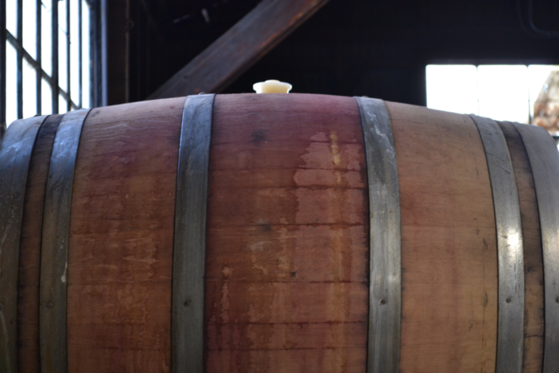

Sources
 https://www.lexisnexisip.com/knowledge-center/the-brewing-of-beer-patent-groupings/.Foss, Taylor. “Hazy IP: Understanding Patents and Trademarks through Hops.” Craft Brewing
Business, 3 Sept. 2020, https://www.craftbrewingbusiness.com/featured/hazy-ip-understanding-patents-and-trademarks-through-hops/.
Sparhawk, Andy, et al. “Beer History.” CraftBeer.com, 10 Mar. 2020, https://www.craftbeer.com/beer/beer-history.
“Maryland Beer Company.” Brewers Association of Maryland, 9 Mar. 2021, https://marylandbeer.org/members/maryland-beer-company/. (homepage)
“Oldest Brewery in Michigan.” Frankenmuth Brewery, 14 Sept. 2021, https://frankenmuthbrewery.com/.
24, Nick Carr on January, et al. “15 Books You Should Own (to Brew Better Beer).” Kegerator.com, 4 Jan. 2018,
https://learn.kegerator.com/homebrewing-books/.
Magazine, Kansas Living. “How Craft Beer Is Made.” Kansas Living Magazine, 11 Jan. 2018,
https://kansaslivingmagazine.com/articles/2018/01/11/how-craft-beer-is-made.